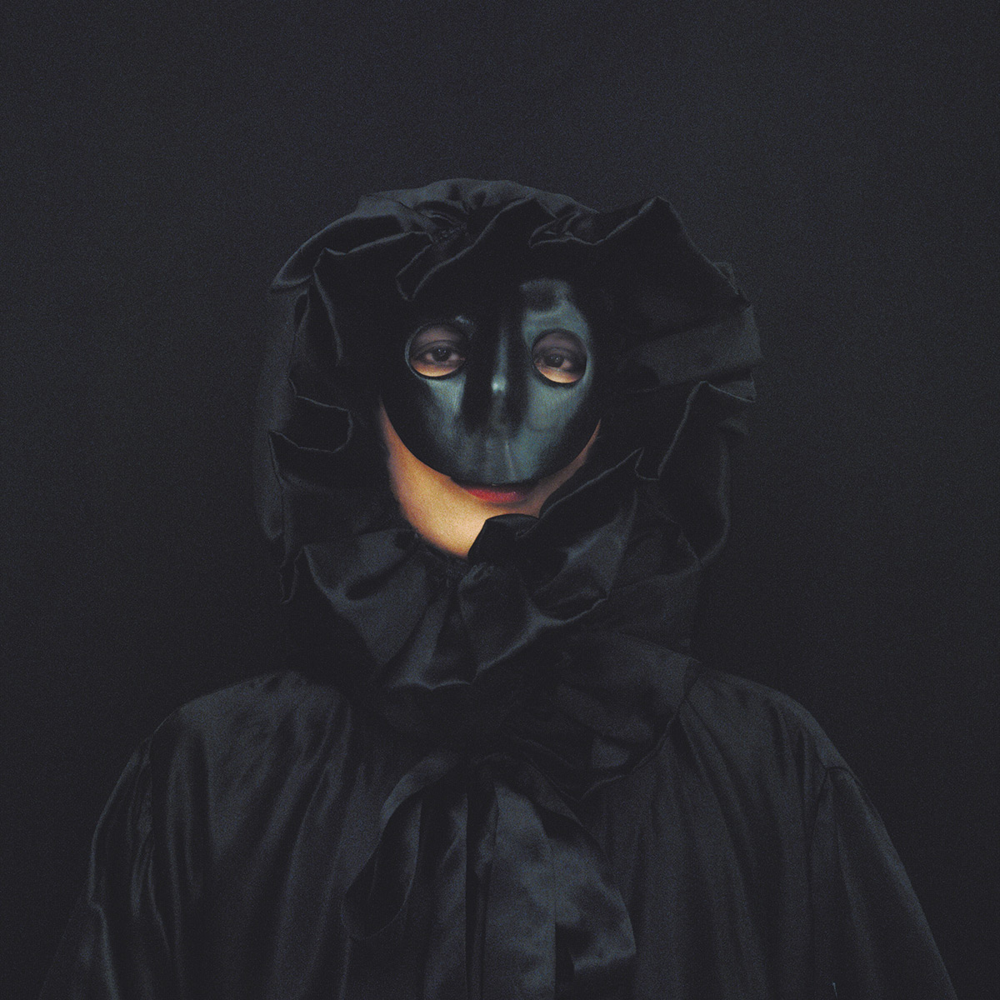
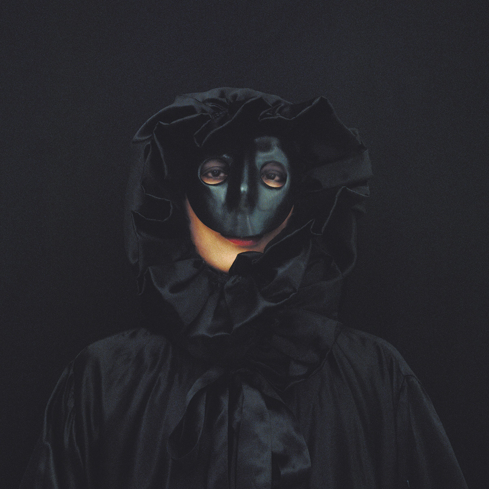
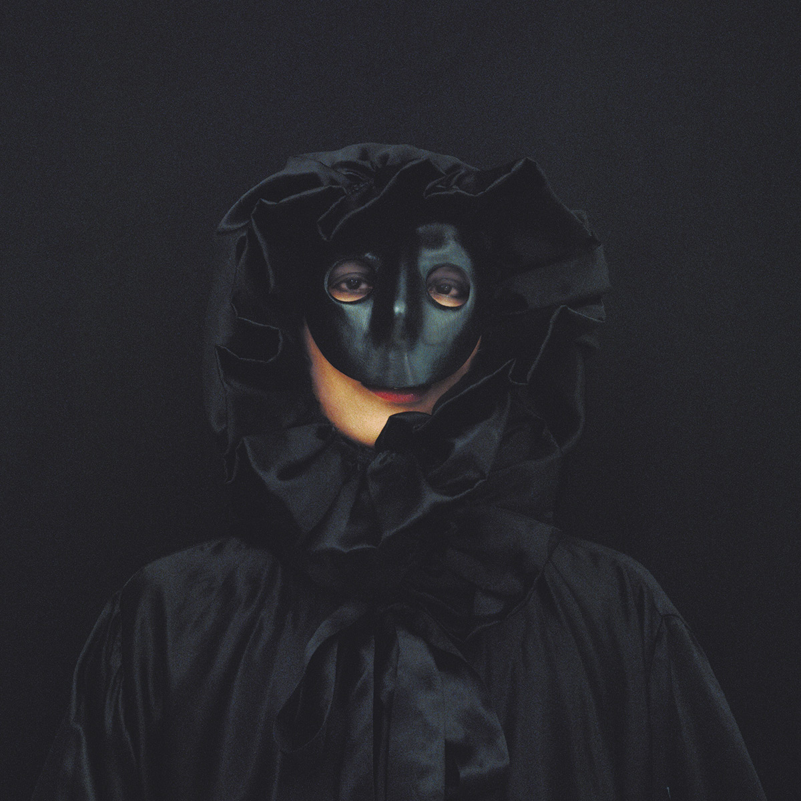
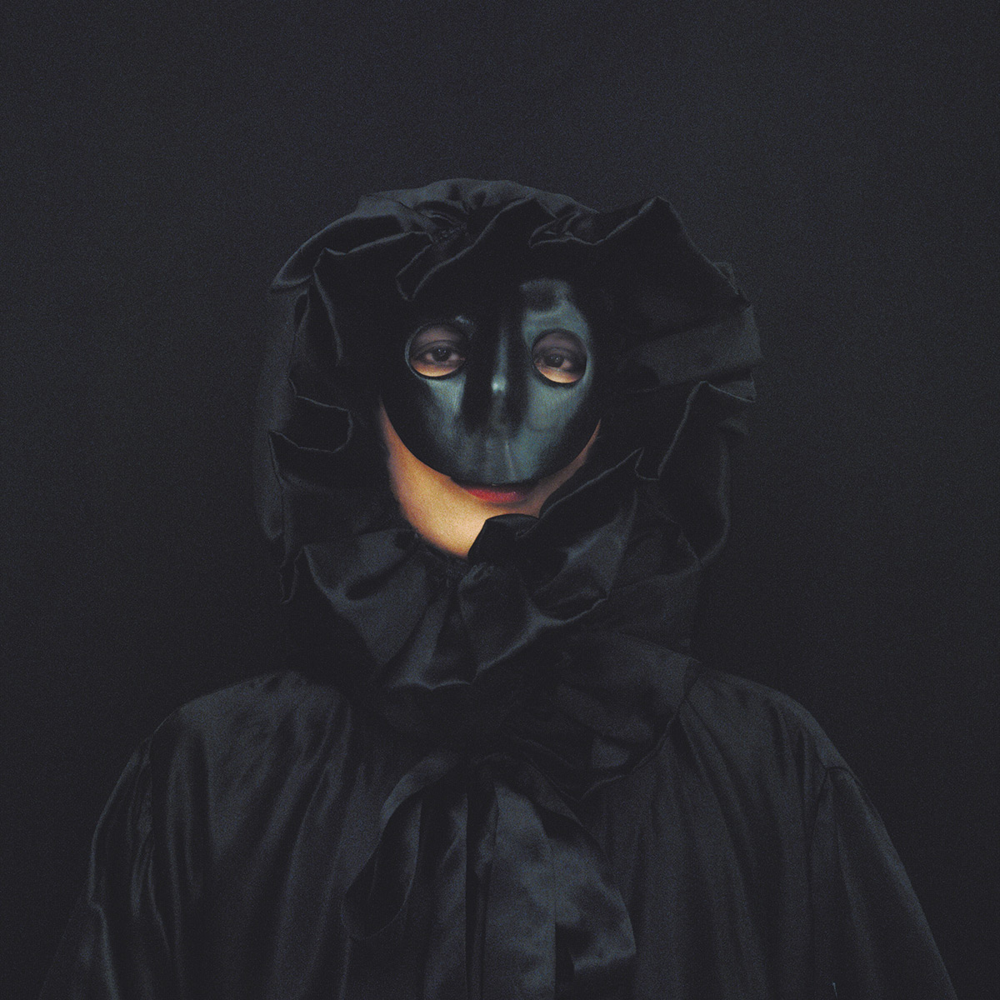

Divina Comedia
By Kimiko Yoyida üì∏


 



 

es una artista japonesa nacida en 1963 en Tokyo. Estudió literatura en la Universidad de Chuo, en Tokyo, graduándose en 1986, fotografía en el Tokyo College y también en la Escuela Nacional Superior de Fotografía en Arles y el Estudio Nacional de Artes Contemporáneas en Le Fresnoy, Francia.